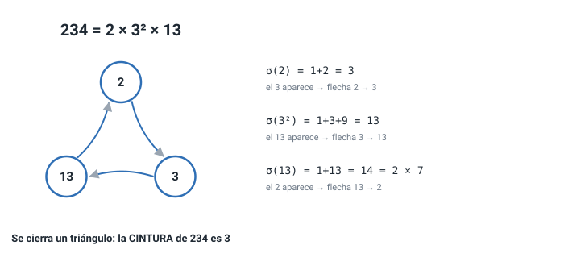
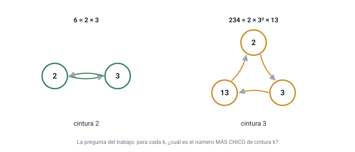
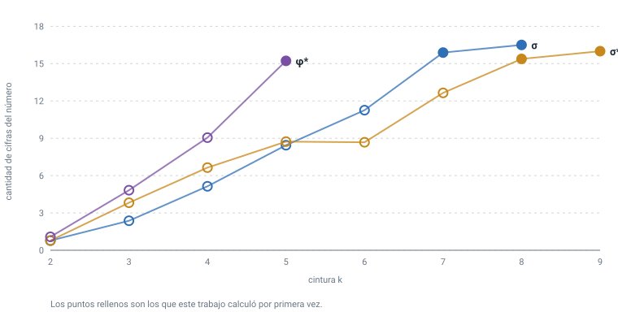
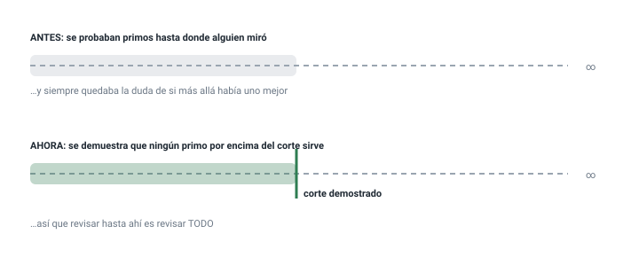

Explicación desde cero · sin conocimientos previos
Qué es la cintura de un número, de dónde salieron los diecinueve valores de este trabajo, cómo se comprobaron y para qué sirven. Si sabés dividir y te acordás de qué es un número primo, con eso alcanza.
Vamos a hacer un dibujo con un número. Suena raro, pero es sencillo: los puntos del dibujo son sus primos, y las flechas salen de una cuenta.
Tomemos el 234. Primero lo partimos en primos:
234 = 2 × 3² × 13. Los puntos del dibujo van a ser 2, 3 y 13.
Ahora, a cada primo le calculamos la suma de los divisores de su potencia. Es una cuenta de escuela:
Y la regla de las flechas es: de cada primo sale una flecha hacia los
primos que aparecen en su resultado. Del 2 sale una flecha al 3, porque 3
apareció. Del 3 sale una al 13. Y del 13 sale una al 2, porque
14 = 2 × 7 tiene un 2 adentro.
Las tres flechas cierran un triángulo: 2 → 3 → 13 → 2. Ese
camino que vuelve al punto de partida se llama ciclo, y su largo acá es
3. Al largo del ciclo más corto que tenga un dibujo se le dice su
cintura.
La pregunta de este trabajo: para cada largo
k, ¿cuál es el número más chico de todos cuyo dibujo tiene
un ciclo de largo k?
Para k = 3 la respuesta es 234: ningún número menor tiene
un triángulo. Este trabajo contesta esa pregunta para
52 casos, con once cuentas distintas en
lugar de la suma de divisores.
12 ÷ 3 da exacto, sin resto.
Se escribe 3 | 12.234 = 2 × 3² × 13.
Cada número se parte de una sola manera.n, incluido él
mismo. σ(6) = 1+2+3+6 = 12. Es una de las cuentas más viejas de
la matemática: con ella se definen los números perfectos.n, sin repetir.
rad(234) = 2 × 3 × 13 = 78.
Un detalle que importa: el dibujo sólo tiene sentido cuando todos los primos tienen al menos una flecha que les llega. Los números donde eso pasa se llaman, para la suma de divisores, prime-abundant, y no son un invento de este trabajo: los estudiaron Pollack y Pomerance en 2012 y están catalogados en la enciclopedia OEIS. Lo que se calcula acá es una propiedad del dibujo de esos números, que es otra cosa.

Dibujá el 6. Pista: 6 = 2 × 3, así que hay dos puntos.
Calculá σ(2) y σ(3) y mirá qué primos aparecen.
Respuesta: σ(2) = 3, así que sale una flecha
2 → 3. Y σ(3) = 1+3 = 4 = 2², así que sale
3 → 2. Las dos flechas cierran un ciclo de largo 2: la cintura
del 6 es 2. Y no hay ningún número más chico que cierre, así que el 6
es la respuesta para k = 2.
Acá nadie opinó. Cada uno de los diecinueve números salió de un programa, y hay dos programas distintos que no comparten el método:
En una versión anterior, el constructor proponía n = 120 como
el más chico de cintura 3 — y la cintura real de 120 es 2. Construir no es
verificar: todo candidato producido por un método tiene que comprobarse con
una medición independiente.
Para cuatro cuentas distintas —la suma de divisores y tres parientes suyas— y para cada cintura, el número más chico. 38 de ellos no se habían calculado nunca.

Ésta es la parte que convierte una lista en un resultado. La versión anterior de este trabajo decía, con honestidad, que sus valores eran «los más chicos entre los primos examinados» — o sea que si alguien miraba más lejos, quizá aparecía uno mejor. Era una conjetura, no un teorema.
Lo que cierra esa puerta es un razonamiento corto. Si un número es el más chico de su cintura, su primo más grande no puede ser cualquiera: el primo que lo apunta en el ciclo tiene que aportar un valor que lo contenga, y eso obliga a que el número entero sea al menos tan grande como cierto producto. Dado un ejemplo cualquiera ya conocido, eso acota el primo más grande posible. Y revisar todos los primos por debajo de una cota es revisar todos.

El corte de arriba tiene un problema: está escrito en términos de un ejemplo que ya se conoce. Si de una cintura nadie exhibió nunca un número, no hay con qué empezar, y la versión anterior decía justamente eso: que ahí la búsqueda «sigue siendo heurística».
Resultó ser falso, y lo interesante es que la propia versión anterior tenía el material para darse cuenta. Duplicando un tope y revisando de forma exhaustiva por debajo, la búsqueda ya no necesita ninguna semilla. Con eso salió el primer valor que no podría haberse calculado antes: la cintura 9 de una de las tres funciones, que no tenía ningún ejemplo conocido.
Uno esperaría que pedir un ciclo más largo cueste más, y casi siempre cuesta. Pero dos veces en la tabla el número de la cintura siguiente es más chico que el anterior. ¿Por qué?
Mirá el dibujo como un collar de cuentas. Para alargar el collar en una cuenta hay que meter una cuenta nueva entre dos viejas. La cuenta nueva cuesta algo —es un primo más—, pero la cuenta que queda justo antes puede salir más barata, porque ya no tiene que alcanzar hasta la que seguía; alcanzar menos lejos significa una potencia más chica. Si lo que se ahorra es más que lo que se paga, el collar más largo es el más barato.
Ésa es toda la idea, y se puede comprobar sin encontrar el número siguiente. Todo lo que la comprobación necesita está en el collar que ya se tiene: para cada unión, las potencias por debajo de la que ya está, y los primos que dividen al valor en esa potencia. Las dos listas son cortas y finitas. Si alguna inserción sale más barata que lo que reemplaza, entonces el número siguiente es más chico — demostrado, sin buscarlo.
Y funciona: sobre todos los pares de cinturas consecutivas de la tabla, la comprobación dice «más chico» exactamente dos veces, que son exactamente las dos veces que pasa — y en las dos entrega el número siguiente clavado.
Hay un premio extra, y es cómo se calcularon dos de los valores nuevos. Aunque la inserción no salga más barata, igual entrega un número de verdad de la cintura siguiente — y tener un número es justo lo que la búsqueda de la sección 6b necesita para arrancar, porque le ahorra todo el tanteo. Se corrió de las dos formas para ver cuánto vale eso: arrancando de cero tardó 1125 segundos; arrancando del número que la inserción entrega, 252. Compra velocidad, no posibilidad: la búsqueda llega igual.
Porque cualquiera puede correr un comando y verlo. El repositorio trae un programa que corre 411 comprobaciones en unos segundos, sin instalar nada.
| No dice | Por qué |
|---|---|
| Que la familia de números sea nueva | No lo es: para la suma de divisores son los prime-abundant de Pollack y Pomerance (2012), catalogados como A175200. Lo nuevo es el invariante del dibujo. |
| Que haya valores para toda cintura | La tabla llega hasta donde el cómputo llegó. Las casillas vacías son casillas vacías, no ceros. |
| Nada sobre los números que no son de esta familia | Si a algún primo no le llega ninguna flecha, el número queda fuera y no se dice nada de él. |
| Que el método sea el más rápido posible | Se midió que es varias veces más rápido que el anterior, y eso es todo lo que se afirma. |
| Que si la comprobación no encuentra ninguna inserción más barata, el número siguiente sea mayor | La comprobación vale en una sola dirección. Cuando encuentra una, el siguiente es de verdad más chico. Cuando no encuentra ninguna, el siguiente todavía podría ser más chico por un motivo que no tiene nada que ver con este collar — no pasó nunca en la tabla, pero «nunca pasó» es una medición, no una demostración. |
| Palabra | Qué quiere decir | Ejemplo |
|---|---|---|
| Primo | Sólo lo dividen 1 y él mismo | 2, 3, 5, 7 |
| Factorizar | Partir en producto de primos | 234 = 2·3²·13 |
| σ(n) | La suma de todos los divisores | σ(6) = 12 |
| rad(n) | El producto de los primos distintos | rad(234) = 78 |
| Grafo dirigido | Puntos unidos por flechas | 2 → 3 |
| Ciclo | Camino de flechas que vuelve al inicio | 2→3→13→2 |
| Cintura | El largo del ciclo más corto | cintura(234) = 3 |
| Testigo | Un número que exhibe cierta cintura | 234 para k=3 |